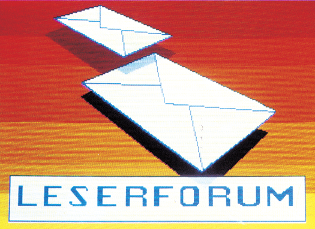

Leserforum

DMA AM C 64
WerhatErfahrungen mitdem DMA-Eingang des C 64? Woher wissen die Speicherbausteine, wann geschrieben und wann gelesen wird?
MARKUS LANG
DATEX-P IN ÖSTERREICH?
Gibt es Datex-P in Österreich? Wenn ja, wie hoch sind die Kosten? An welche Stelle muß man sich wenden, um Informationen zu bekommen?
M. MAIER
TURBO TRANS IN DER ALTEN 1541
Wer weiß, wie man Turbo-Trans 64 in die alte (weiße) 1541 einbauen kann? Ich habe bis heute noch keine Möglichkeit gefunden.
BEUT RÜEGG
DRUCKPROGRAMM FÜR EAN-CODES GESUCHT
Ich suche Programme, um mit einem C 64 und einem Star-Drucker SG-10C EAN-Strichcodes drucken zu können. Wer hat schon Erfahrung mit Strichcodes in Verbindung mitdemC 64? Gibt es eventuell auch professionelle Anbieter solcher Software?
ERICH HANDKE
SX 64 AN DER AUTOBATTERIE
Ich möchte meinen tragbaren Commodore SX 64 auf 2 V Spannungsversorgung (Akku, Autobatterie) umrüsten. Wo kann ich eine Bauanleitung bekommen und wer hat Erfahrungen im Umrüsten beziehungsweise nimmt den Umbau vor?
Ausgabe 6/86
UDO HAUSSMANN
Wir bieten für den SX 64 ein 12-V-Einbaumodul an. Mit Einbau kostet es 125 Mark (SX 64 zuschicken). Für Do-itYourselfer kostet es mit Einbauanleitung 100 Mark. Allerdings sollte der Einbau nur von jemanden mit genügend Vorkenntnissen erfolgen, da Lötarbeiten unumgänglich sind. Das Modul ist mit einem KFZ-Bordspannungsstekker ausgestattet und erzeugt alle Spannungen die der SX 64 braucht.
CHRISTIAN WÖRLEIN
Moritzstr. 70, 4300 Essen 1, Tel. 0201/41 1108
Ich habe meinen SX 64 mit einem 12-V-Adapter ausgerüstet undarbeite damitjetztschon seit einem dreiviertel Jahr störungsfrei. Der Stromverbrauch liegt, je nach Ausbau des Computers, bei etwa 3,5 Ampere. Ich bin gerne bereit Unterlagen und Schaltplan gegen einen frankierten Rückumschlag zuzusenden.
SIEGFRIED JENZIK
Siegfried Jenzik, Waldemarstr. 101 1000 Berlin 36
PLATINEN-LAYOUT EINFACH GEMACHT
Zu Ihrem Artikel in Ausgabe 4/86, Platinenätzen leichtgemacht, habe ich einen anderen Vorschlag zum Kopieren des Layouts aus der Zeitschrift auf Platine. Man kann das Layout mit einem guten Fotokopierer gleich auf Folie kopieren. Ein Stück DIN-A4-Folie kostet im Copy-Shop etwa eine Mark und ist somit wesentlich billiger. Das Kopiergerät sollte man auf möglichst dunkle Kopien einstellen.
HEIKO KAMP
Anm. der Redaktion:
Wir kennen auch diesen Trick und haben auch schon damit gearbeitet. Allerdings mit wechselndem Erfolg. Denn meist ist die Schwärze aufeiner Folie aus einem Kopierer nie richtig lichtdicht, so daß die Leiterbahnen häufig Risse zeigen oder die Platine sich nicht richtig entwickeln läßt.
LISTINGS ALS BARCODE?
Warum drucken Sie die Listings nicht als Barcode ab?
CHRISTIAN GRÜNER
Eine Frage, die uns häufig gestellt wird. Vor etwa einem Jahr haben wir uns ausführlich mit diesem Thema beschäftigt, fanden aber keine praktikable Lösung. Würden wir nämlich zu jedem Listing oder anstelle desListings den Barcode abdrucken, könnten wir jeden Monat, aus Platzgründen, nur noch einen kleinen Teil unserer Listings bringen. Die dadurch sehr eingeschränkte Auswahl an Programmen wollen wir unseren Lesern nicht zumuten.
UHR AM BILDSCHIRM?
Ist es beim C 64 möglich, den Bildschirmhintergrund zu benutzen, so daß beispielsweise oben rechts die Uhrzeit angezeigt wird?
STEFAN BASS
Wenn die Anzeige Bildschirmausgaben nicht beeinflußen soll, empfiehlt essich, die Anzeige in den Bildschirmrahmen zu verlegen. In Ausgabe 1/86 haben wir auf Seite 78 das Listing des Programms »Die unmögliche Uhr« abgedruckt, das die Uhrzeit innerhalb des Rahmens anzeigt. Zusätzlich hat diese Uhr eine Alarm- und Weckfunktion.
PRINT-SHOP UND STAR SG-10C
Wie bekomme ich einen Print-Shop-Ausdruck auf einem Star SG-10C?
Ausgabe 6/86
HANS FUSS
Ich besitze auch einen Star SG-10C und habe keine Probleme mit dem Ausdruck von Print-Shop-Grafiken, da der Star SG-10C den BefehlssatzdesMPS 801 kennt. Auf der Print-Shop-Diskette befindet sich auf der A-Seite eine Epson- und auf der B-Seite eine MPS-801l-kompatible Version des Druckprogramms. Wenn ich die B-Seite der Print-Shop-Diskette benutze, bereitet die Kombination Star — Print-Shop keine Probleme.
THOMAS FENCHEL
BETRIFFT CMOS-RAM-PLATINE
Eine Frage zu der von Ihnen in Ausgabe 4/86 vorgestellten CMOS-RAM-Platine: Kann man auf ihr verschiedene Programme wie Vizawrite, Multi- plan etc. speichern und abrufen?
UDO MÖLLER
Selbstverständlich können Sie auf unserer CMOS-RAM-Platine Programme speichern und abrufen. Allerdings müssen Sie dabei beachten, daß die Programme nicht länger als 16 KByte sein dürfen, was für Vizawrite mit etwa 24 KByte nicht zutrifft. Zusätzlich müssen Sie Programme mit Basic-Start mit einer Verschieberoutine versehen, die ein Programm an den Basic-Start verschiebt. Beispielsweise von Adresse $8000 nach Adresse $0801.
FRAGEN ZUM C 128
(1) Wo gibt es Software für den MC-Plotter für den C 128?
(2) Ist der C 128 wirklich voll CP/M-fähig?
GÜNTHER KLENK
(1) Eine Bezugsadresse für Druckprogramme fürdenC 128, die den MC-Plotter ansteuern können, ist uns unbekannt. Vielleicht hat ein Leser ein entsprechendes Programm geschrieben?
(2) Der C 128 ist tatsächlich voll CP/M-fähig. Schwierigkeiten kann allerdings die RS232-Schnittstelle unter CP/M bereiten, da sie wegen eines BDOS-Fehlers im BIOS-Betriebssystem nicht angesteuert werden kann.
C 64-PROGRAMME AUF CBM 4032
Wie kann ich Basic-Programme vom C 64 aufden CBM 4032 übertragen?
Ausgabe 5/86
MANFRED FRIES
Hier meine Methode: 1. Das C 64-Programm ganz normalmitdem CBM 4032 laden. Es steht dann ab Adresse $0801 im Speicher. 2. Folgende Befehle im Direktmodus eingeben: POKE 1025,1:POKE 1026,8:POKE 1027,0:POKE 1028,143:POKE 1030,0. Das Programm ist jetzt bereits list- und lauffähig. Als neue Zeile 0 erscheint: 0 REM 3. Die REM-Zeile 0 löschen mit O0 <CR>. Der 4032 holt das Programm jetzt automatisch an den Basic-Start bei $400.
MARTIN NAHNSEN
VIZAWRITE UND DPS 1120
Wie bekomme ich meinen DPS 1120-Drucker dazu, unter Vizawrite die deutschen Umlaute auszudrucken?
KLAUS STENZEL
Um Sonderzeichen mit dem DPS 1120 darstellen zu können, müssen Sie in den zweiten Zeichensatz umschalten. Dies geschieht am besten am Anfang des Textes mit ESC-Befehlen (vgl. 64'er 1/86 und Handbuch).
Der Code 23 bewirkt eine Umschaltung auf den zweiten Zeichensatz. Allerdings muß darauf geachtet werden, daß daszalsy und umgekehrt gedruckt wird.
Haben Sie den zweiten Zeichensatz eingeschaltet, müssen Sie noch berücksichtigen:
Ö: Plus-Taste drücken
ö: SHIFT-Komma
Ä: Asterisk (Stern)
ä: SHIFT-Punkt
ü: SHIFT-Stern (ein Ü habe ich noch nicht gefunden)
ß: Minus
?: Gleichheitszeichen
-: Schrägstrich
/: SHIFT 7
%: SHIFT 3
<: Pfeil nach oben
Um automatisches Unterstreichen, Fettschrift und Sperrschrift drucken zu können, müssen Sie wieder den ersten Zeichensatz einschalten.
THOMAS LÜBKE
LITERATUR FÜR PROGRAMMIERER
Ich habe ein paar Grundkenntnisse in Basic und möchte meinen C 64 optimal nutzen. Welche Literatur können Sie mir zur Weiterbildung in Sachen C 64 empfehlen?
STEFAN SAHM
Wegen der großen Anzahl an Büchern zum C 64 ist es sehr schwer, derartige Empfehlungen zu geben. Wahrscheinlich bevorzugen Sie auch ein bestimmtes Gebiet wie Grafik, Sound, mathematische Problemstellungen etc.. Aus diesem Grund möchten wir Sie auf die Buchbesprechungen im 64er hinweisen.
GEHEIMNISVOLLE GRAFIK-ZEICHEN
Grafiken im Bereich ab $E000 weisen nach einem Reset über einen Taster seltsame Verstümmelungen im unteren Bereich auf. In anderen Bildschirmbereichen tritt dies nicht auf. Kann das Problem beseitigt werden?
D. WANDEL
Was Sie da aufdem Bildschirm als störendes Wirr-Warr sehen, ist die Folge des Resets. Bei der Initialisierung der I/O-Vektoren wird eine Tabelle vom Betriebssystem in sich selbst kopiert. Da im Bereich der Tabelle (ab $FD30) noch ein Teil der Grafik liegt, wird diese ganz einfach überschrieben. Diese Routine wird übrigens auch bei <RUN/ STOP-RESTORE> und beim Software-Reset (SYS 64738) verwendet, so daß es wohl nur eine Möglichkeit gibt, das Verunstalten der Grafik zu verhindern: das Betriebssystem umzuschreiben und mit den Änderungen aufEPROM zu brennen. Die Veränderungen sind minimal, sogar der Platzbedarf ist derselbe wie bei der Original-Routine:
fd15 ldx #$30
fd17 ldy #$fd
fd19 clc
fd1a stx $c3
fa1c sty $1c
fd1e ldy #$1f
fd20 lda ($c3)y
fa22 bcc $fd29
fd24 lda $0314,y
fd27 sta ($c3)y
fd29 sta $0314,y
fd2c dey
fd2d bpl $fd20
fd2f rts
UNBEKANNTER FEHLER?
Der Eingabe von »SAVE "'Name '",2« entgegnet der C 64 mit der Meldung »? ILLEGAL DEVICE NUMBER ERROR«. Aber im Handbuch finde ich diese Fehlermeldung nicht, was hat sie zu bedeuten?
VOLKER HERZOG
Die Geräteadresse 2 entspricht beim C 64 der RS232-Schnittstelle. Damit lassen sich Akustikkoppler und Modems ansprechen, allerdings nicht über den SAVE-Befehl. Bei der internen Überprüfung der Geräteadresse klammert das Betriebssystem die Nummern 0, 2 und 3 aus, und meldet den »? IL-LEGAL DEVICE NUMBER ER-ROR«, was übersetzt heißt»un- gültige Geräteadresse«.
FORTRAN FÜR C 64
Als C 64-Anwender und Maschinenbau-Student habe ich ein dringendes Problem: Gibt es für den C 64 die Programmiersprache Fortran auf Diskette oder Modul?
ANDREAS RESSEL
Einen Fortran-Compiler für den Standard C 64 gibt esleider nicht, allerdings für den C 128 (CP/M-Modus). Die Firma Microsoft bietet einen Fortran 80-Compiler an. Allerdings kosteterüber 1000 Mark. Eine billigere Lösung ist der Low-Cost-Compiler »Nevada Fortran«.
Info für Nevada Fortran bei: ComFood, Flaßkamp 24, 4400 Münster, Tel. 0251/719768
GRÖSSTE PRIMZAHL MIT C 64?
Gibt es ein Programm, mit dem man die größte Primzahl der Welt herausfinden kann?
MARKUS KÜPPERS
Da es unendlich viele Primzahlen gibt, kann man natürlich kein Programm schreiben, um »die größte Primzahl« an sich zu berechnen. Allerdings wurde die größte derzeit bekannte Primzahl tatsächlich mit Hilfe eines Computerprogramms berechnet. Esist die Zahl 21132049-1, eine Zahl mit 39751 Dezimalstellen. Die Rechenzeit auf einem Großrechner betrug unter Verwendung eines sehr speziellen, fortgeschrittenen Testverfahrens mehrere Stunden. Wenn jemand auf die Idee käme, ein solches Programm auf dem C 64 zu schreiben, dann müßte er wahrscheinlich Rechenzeiten von Wochen oder Monaten in Kauf nehmen. Übrigens: Wer uns ein Programm schickt, mit dem man derartig hohe Primzahlen in vertretbarer Rechenzeit herausfinden kann, der kann mit einem Abdruck seines Listings und mit einem Sonderpreis rechnen.
ÄRGER MIT DEM C 128?
Ich habe mir vor kurzem einen C 128 gekauft und sofort Anlaß zum Ärger bekommen:
Die Firma Commodore liefert kein Handbuch zur Floppy-Station 1571 aus, obwohl es nach eigenen Angaben zum Lieferumfang gehört, was ja auch der Verdingungsordnung entspricht. Im C 128-Handbuch wird mehrfach auf das Handbuch zur 1571 verwiesen, so daß dem Anwender also wertvolle Informationen fehlen.
Weiterhin wird das CP/M-System nicht vollständig geliefert. Es fehlen hier einige zur Arbeit mit CP/M unverzichtbare Files, die zum Lizenzumfang von Digital Research gehören (zum Beispiel Makro-Assembler und Debugger). Meiner Ansicht nach ist daher die Behauptung, bei dem mitgelieferten CP/M handelt es sich um CP/M 3.0, aus diesem Grunde eine Irreführung des Käufers. Andere Firmen, wie zum Beispiel Schneider, liefern das CP/M 3.0 selbstverständlich komplett. Geärgert habe ich mich nicht nur darüber, beim Kaufgespräch vom Verkäufer nicht auf diese Mißstände hingewiesen worden zu sein, sondern auch darüber, daß keine Computerzeitschrift in den zahlreichen Berichten zum C 128 bisher einen entsprechenden Hinweis gegeben hat. Oder haben die Redaktionen allesamt ein ordnungsmäßes System erhalten?
MICHAEL ZIMMER
Inder Tat ist das CP/M-System beim C 128 nicht vollständig; es fehlen unter anderem die beiden zum Lizenzumfang von Digital Research gehörenden Makro-Assembler MAC und RMAC sowie der Maschinensprache-Monitor und symbolische Debugger SID, Diese Programme befinden sich offenbar aus Platzgründen nicht mit auf der Systemdiskette und müssen ebenso wie das CP/M-Plus-Handbuch gegen Aufpreis getrennt erworben werden. Wenn bei Ihrem C 128 D das zugehörige Handbuch zur 1571-Floppy fehlt, dann sollten Sie sich direkt an Commodore in Frankfurt wenden, wo Sie ein solches Handbuch erhalten können.
C 64 ALS LICHTORGEL?
Wo gibt es anschlußfertige Hard- und Software, um den C 64 als Lichtorgel betreiben zu können?
IVO GERMAN
Ausgabe 4/86
Ein entsprechendes Interface kann bei mir bezogen werden. Das Light-Show-Interface 64 hat acht Kanäle zu je 100 Watt, ist galvanisch vom Netz getrennt und ineein formschönes Gehäuse eingebaut. Ein ungeschütztes Demo-Programm auf Kassette oder Diskette wird mitgeliefert und kann nach eigenen Vorstellungen verändert werden. Das Gerät kostet betriebsbereit mit User-Port-Anschluß und Software 198 Mark.
HANS-GÜNTER ANDERS
Ultra Electronic, Hans-Günter Anders, Friedrich-Ebert-Str. 46, 4830 Gütersloh |
FRAGEN ZU CP/M
Wie erreiche ich unter Turbo-Pascal die C 128-spezifischen Bausteine wie VIC, VDC, CIAR etc?
Wie kann man den Betrieb eines Druckers am User-Port direkt ins BIOS einbinden, damit man nicht immer mit SETUP arbeiten muß?
Hat es bereits jemand geschafft, die quälend langsame Bildschirmausgabe im Commodore-BIOS zu beschleunigen?
Was erhält man von der Firma DI.S., wenn man die 80 Mark überweist? Nur das CP/M-Handbuch oder Handbuch plus Hilfsprogramme? Ich vermisse sowieso RMAC und weitere zum CP/M-System gehörende Utilities.
ULF BARTELT
Im Lieferumfang der Firma D.I.S. sind ein mehrere hundert Seiten starkes Handbuch, sowie zwei Disketten mit zusätzlichen Programmen (unter anderem SID, MAC, RMAC) enthalten. Das Handbuch von Digital Research umfaßt einen Anwender-, Programmiierer- und Systemteil.